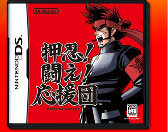
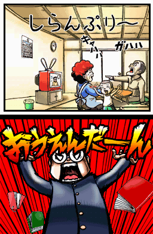
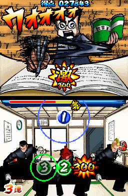
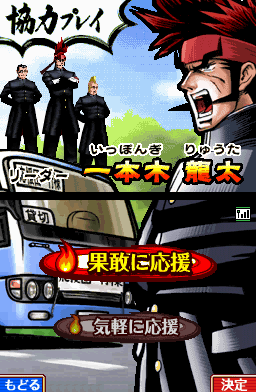
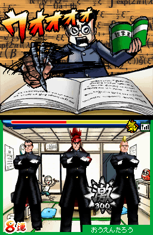
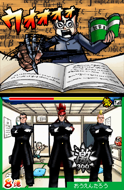
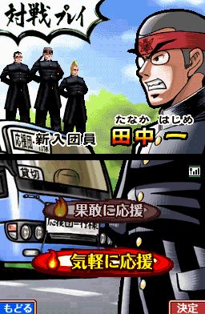
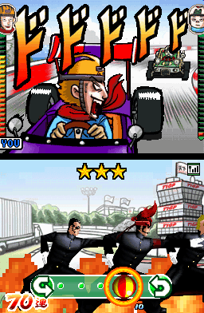

|
 |
ニンテンドーＤＳソフト
発売日：2005年7月28日
希望小売価格：4,800円（税込）
ジャンル：応援リズムアクション
プレイ人数：１〜４人
|
公式ページへ
|
|
暑い夏に、熱いカレー。熱いラーメン。そして熱い応援。暑い時には熱いものが欲しくなるものです。スポーツ、学芸、青春、モロモロの諸事情に悩み多きアナタへ。そして困っている人を見捨てちゃおけないそこのアナタ、あつ〜い男達と一緒に気合い一発応援するべし！ あらゆる種類の困った人々を、リズムに乗って応援しまくれ！
今日から挨拶は「押忍！」で決まりです。流行らせるようにね！ 押忍！
|

街にいるのは困った人々。受験に、恋愛に、お仕事に、人間とはとかく悩む生き物です。
一人では頑張れない時もある。誰かに背中を押して欲しい時もある。
そんな時、気合いを入れて全身全霊で自分を応援してくれる人たちがいたら…ダメに思えることも、気合いで乗り切れそうな気がしませんか？
『押忍！闘え！応援団』は、ジャンルで言うなら"音ゲー"。流れる曲に乗って、タイミング良く入力していくと、応援団の面々が魂のこもった熱い応援を展開。その入力の正否によって、応援する相手の人生が上手く行ったりダメになったりするという、他人様の人生に関わる楽しくも真剣なリズムアクションゲームです。
|

暑苦し…いやいや熱い応援をするには、基本的にタッチペンを使った３つのカンタン操作で遊べます。
ゲームをスタートすると、街で困った人を助けに行く画面へ。まずは苦学中の受験生を助けに参上！ 押忍！
曲はノリのいいポップスなので、原曲を知らない人でもサウンドをよく聴けば全く問題ナシ。
かくいう私も、あまり知らない方なのですが、入力について苦労することはありませんでした。
リズムさえ取れれば、絶対に誰でも楽しめるはず。
曲がかかっている最中は、ずっと集中して操作しなくてはいけないものが多いなか、これは一定の時間が経つと入力が反映されたストーリーの展開を見守る、言うなればインターバルと呼べる部分が数カ所あります。
これがいいクッションになっていて、集中してプレイしても疲れ知らずで爽やかな（心の）汗を流せました。
苦しんでいた受験生も家族の協力を得て、無事に合格です！ やりました！ 押忍！
このストーリーは漫画形式で進むのですが、どれもこれも"面白い"を通り越して"おかしい"ような気がするのは気のせいでしょうか。たぶん気のせいです。
さて、もし周りにＤＳを持っている友人知人・ご家族がいるアナタはぜひ多人数モードをプレイして下さい。
やっぱり『応援団』なので、一人でやるよりみんなでやった方が楽しい。ということで、身近な人と応援団を結成！
対戦と協力プレイがあるので、より白熱したい人は対戦を、より団結力を深めたい人は協力プレイを選ぶと良いのでは。
できればプレイの前後に「押忍！」と気合いを入れながら遊んでみると、臨場感満点になると思われます。
  

今日からアナタも応援団！ 困った人を助けに気合い一閃、タッチペンを振りかざすべし！ 押忍！
|
|